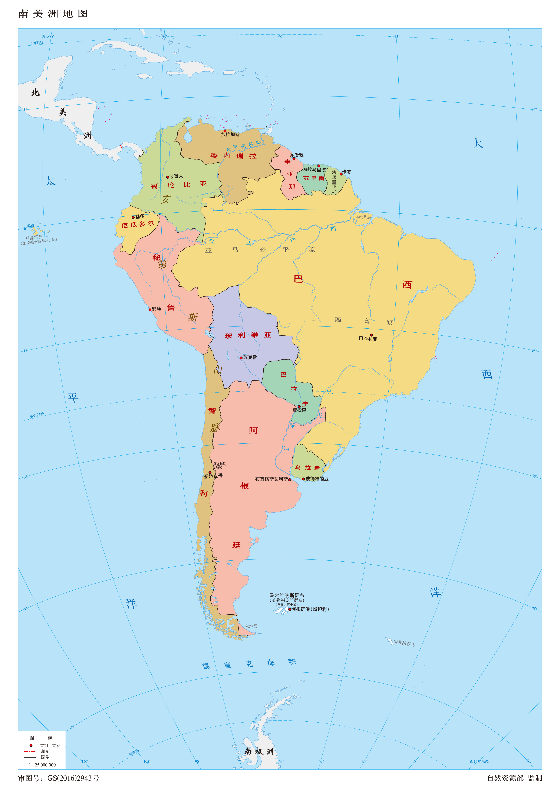
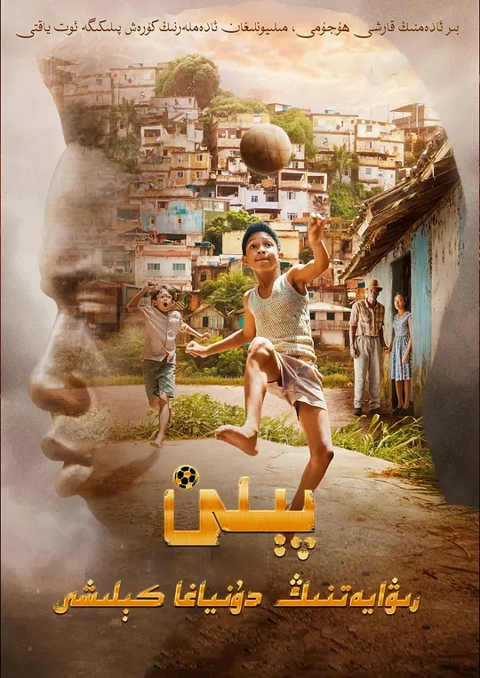
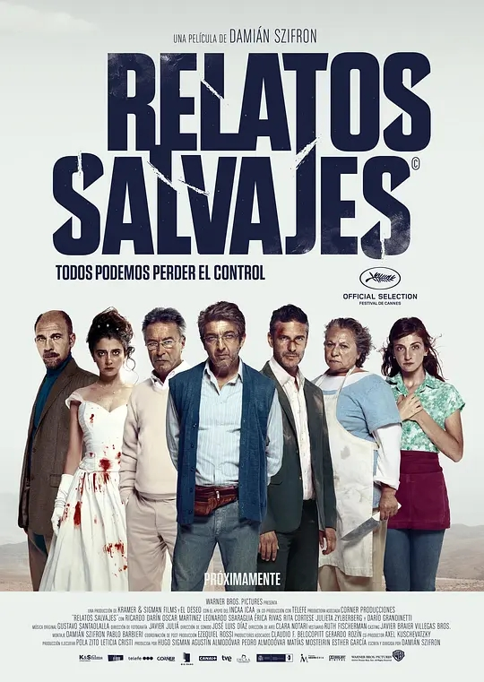
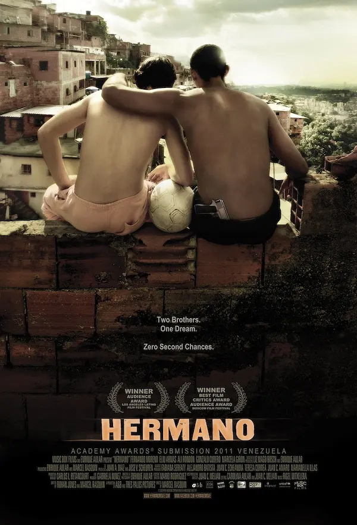
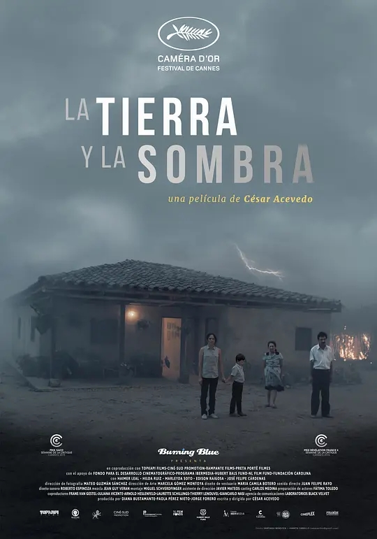
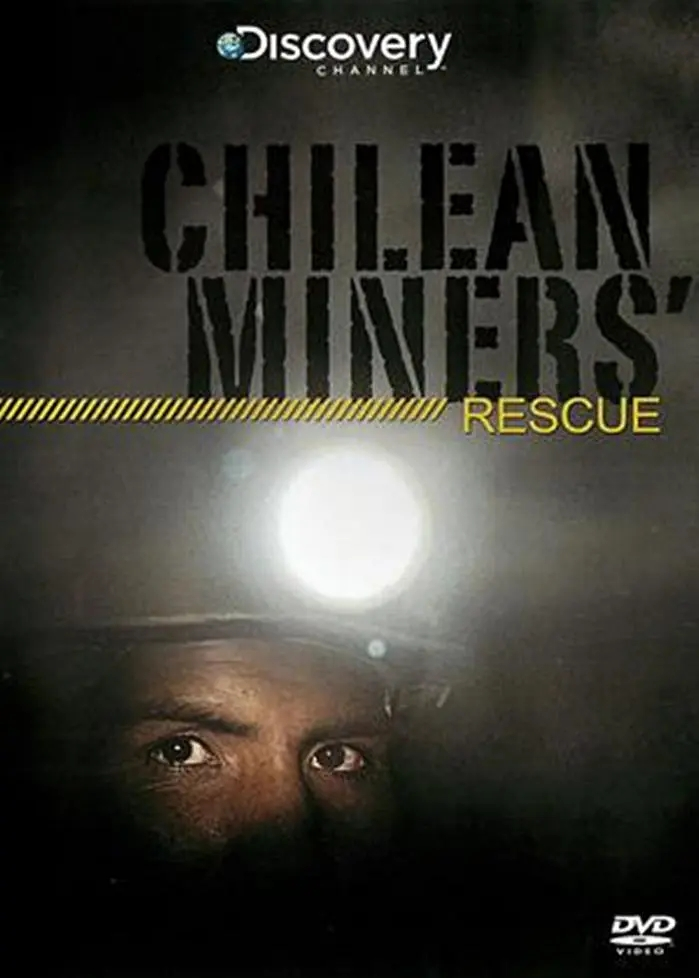
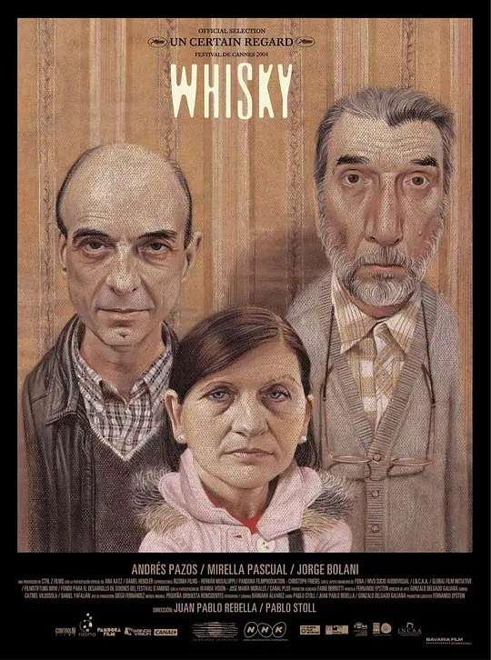
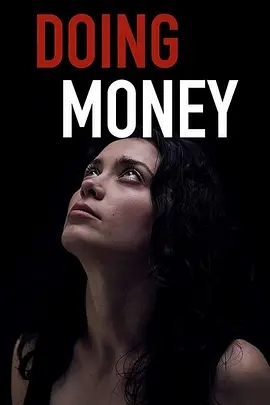
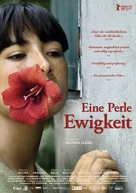

Back to top
本片讲述了球王贝利儿时从贫民窟擦鞋童，靠自己的努力克服重重阻碍，逆转绝境成为足球世界最强者的故事。 影片揭秘了贝利成名前不为人知的经历，家境贫穷、旁人的冷眼、队友的排挤并没有阻碍贝利的成长，父母的教育一直影响着贝利， 从被人贬低到万人瞩目，他一个人的逆袭，燃动了数十亿人的斗志。

Back to top
《荒蛮故事》是一部黑色喜剧，由6个独立的暴力复仇小故事构成。影片是一次对于人类失控行径的颠覆性创作， 从怪异的幽默感，独特的画面和大胆的配乐，到对于身处绝境的普通人这一题材的偏爱，都可以清晰地看到南美鬼才导演达米安·斯兹弗隆与阿莫多瓦在创作方面的相似之处。 不过，斯兹弗隆仍然通过这部影片发出了自己独特的声音：一场对于一个腐败成风、经济和社会严重不平等的社会的尖锐抨击。

Back to top
他们拥有不同肤色，却是比血还浓的两兄弟。哥哥胡里奥（Eliú Armas 饰）和妈妈在垃圾堆捡到弟弟丹尼尔（Fernando Moreno 饰），十五年后两兄弟一起进入了街区足球队， 胡里奥是队长，丹尼尔是主力前锋。职业球队来物色新人，丹尼希望哥哥能和他一起离开街头，而不 再和黑帮鬼混。然而一次意外的开枪走火，让两兄弟的妈妈被胡里奥的黑帮朋友误杀。丹尼尔目睹了全过程， 但保护哥哥的心让他不能开口；而不知就里的胡里奥还一心想找人报仇，并因此和丹尼尔决裂。一场兄弟情终于走到了岔路口......委内瑞拉2010年度票房冠军，在南美洲各大影展收获观众奖。代表委内瑞拉参加第83届奥斯卡最佳外语片角逐。

Back to top
老农民阿方索回到了自己的家乡照顾身患重病的儿子，他重新找到了曾经居住的老房子，却发现自己的前妻带着女婿和外孙依然住在这里。等待着他的故乡已经几乎变成一片荒原， 庞大的甘蔗种植园环绕着他的老房子，日夜烟雾缭绕。阿方索17年前抛下家人离开，如今他试图重新返回，挽救亲情，却发现 在这个已经物是人非的地方，很多答案只能自己去寻找。

Back to top
8月5日发生矿难，33名工人受困地下622米深处；10月13日工人开始升井。69天时间，受困人员全部生还。真正的人类奇迹，这次由智利创造。 自从播出了许三多，中国人都爱说“不抛弃，不放弃”。智利矿难救援，是真正的“不抛弃，不放弃”。这个救援中有太多极限数据。8月5日矿难，8月22日才寻获矿工位置，得知“我们全部33人都在避难所内，全部安好”，这中间有17天。从矿难发生到有人成功升井，相隔60多天。60多天里，井下受困人员全部状况良好。 这些最终获救的矿工将得到什么？他们的生命仍然鲜艳，他们将收获鲜花与掌声。他们还将获得政府赔偿、矿企赔偿等等，还有社会各界提供的一些资助，从免费酒水、免费旅游、免费观赛、新的工作机会等等。报道说，获救人员每人将获得大约相当于300万元人民币的补偿。这不是死亡赔偿金，而是生命得以延续条件下的损失补偿。 一个国家的社会生活，无论平常状态还是突发或紧急状态，本身就是形象宣传片，无须特别拍摄。智利是不是强国，智利的GDP有多少，智利有没有“亲切的关怀，巨大的鼓舞”，我们不知道，但这次矿难救援，对我们的生活经验来说足称震惊——原来生命可以得到如此“奢侈”的呵护。

Back to top
在乌拉圭，他们在镜头前不说奶酪，而是说威士忌。然而，在人为拍摄的笑容之下，是一幅“南美哥特式”的蓝图，去掉了农场和叉子。这些蒙得维的亚人冷酷的表情表明， 他们的生活被习惯的套路所束缚。一个拥有一家老袜子厂的犹太老单身汉也是如此。当他疏远的弟弟决定去参加他们母亲的葬礼时，他让他的雇员玛尔塔冒充他的妻子。最终的相遇创造了笨拙的沉默， 令人不舒服的喜剧。获得东京电影节大奖和戛纳国际电影节大奖。

Back to top
艾伦·里奇、凯伦·汉森、亚力克·塞克雷亚努、汤姆·格林-卡尼等主演，林赛·米勒执导的电视电影[做钱](Doing Money，暂译)首发预告。 影片围绕着名叫安娜的罗马尼亚年轻女子展开，她被绑架并卖给了一个贩卖人口的利益圈，错综复杂的故事也就此揭露。影片即将登陆BBC2

Back to top
2000年，秘鲁总统藤森宣布辞职，他的极权统治也从此结束。然而，因连年的恐怖袭击和高压统治，底层百姓的身心已经承受无数创伤。 秘鲁境内某偏远山区，少女法斯塔（Magaly Solier 饰）的母亲年轻时曾遭到恐怖分子的强暴，继而感染一种名为“伤心的奶水”的怪病。病入膏肓之际，母亲独独担心因哺乳而可能受到传染的法斯塔。 母亲去世，法斯塔远离家乡和悲伤，来到小镇上一个女钢琴家的别墅打工。她似乎对周遭一切都不关心，只一心关注自己随时可能失去的生命，和前景模糊的未来…… 本片荣获2009年柏林国际电影节金熊奖及国际影评人费比西奖、2009年瓜达拉哈拉墨西哥电影节最佳影片和最佳女主角（Magaly Solier）奖。